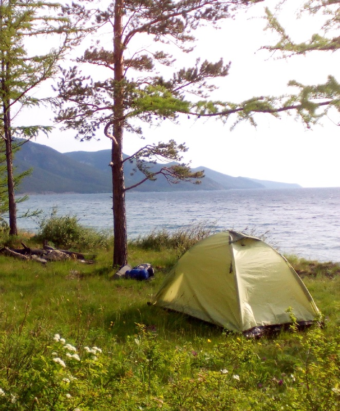

Платов Александр

Platov Alexander
Привет, меня зовут
Александр Платов. Я
Путешественник. Я
Исследую Землю
Путешественник. Я
Исследую Землю
Все самое интересное происходит на работе. Найти работу, которая приносит удовольствие -
достойная цель, чтобы пробовать разные направления в развитии. С начала рабочей
деятельности испробовал должности слесаря-ремонтника, электрика, инженера-конструктора,
инженера-электроника и писаря в штабе.
A.Platov